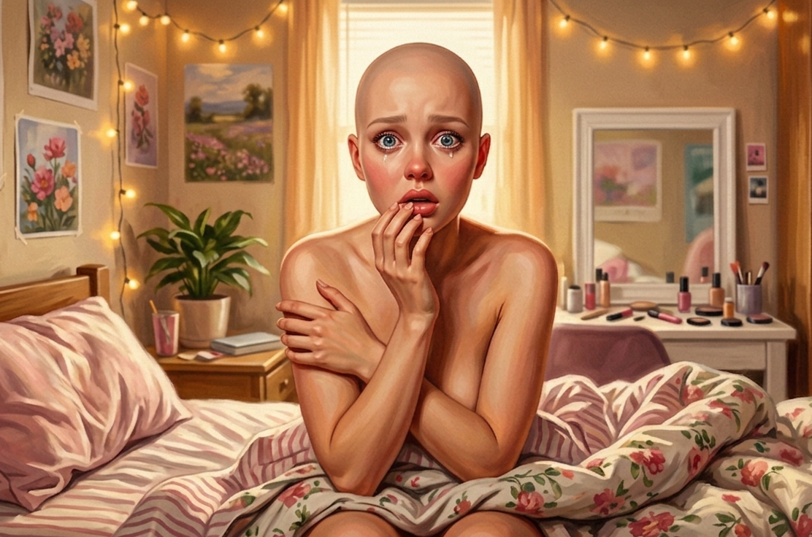
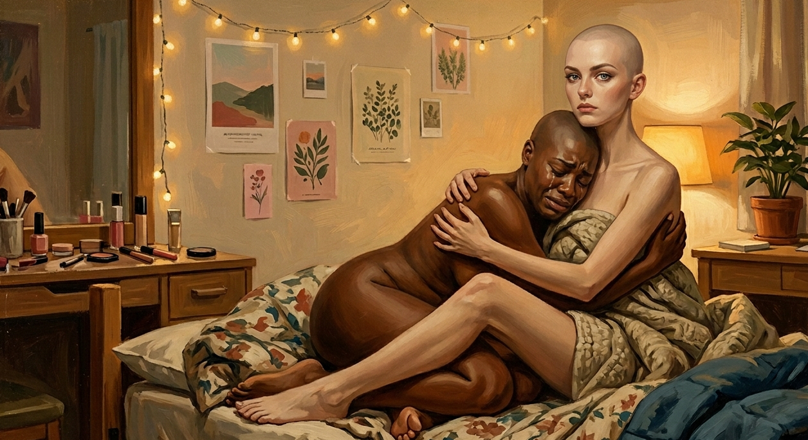
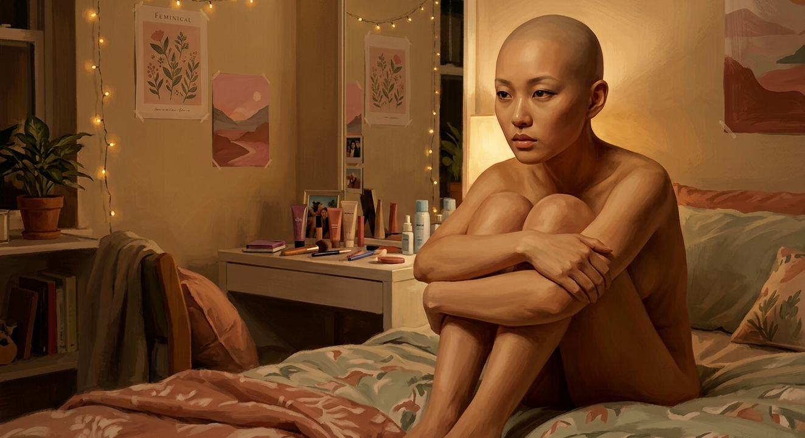

The scream went on without him.
Charlie had started it, but his body took it over, and the thing pouring out of him was high and bright and clear, ringing off the warm walls, a sound with nothing of him in it. He heard it the way you'd hear a smoke alarm in another room, distantly, helplessly, knowing it was yours and unable to make it stop. It went until the air ran out. Then it stopped on its own.
He was sitting up in bed, blanket thrown off. And across the room, set into the wall beside a little white vanity table with a cushioned stool tucked under it, was a mirror, and a girl was looking at him out of it.
She moved when he moved. That was how he knew.
He lifted a hand and she lifted hers, the fingers long and slim and tapering, the nails grown out past the tips into clean almond ovals, and he turned it over and she turned hers, and he understood with a slow sick lurch that the hand was his, that all of it was his, that the girl in the mirror was what he was now.
He made himself look at the face.
He hadn't seen his own face since the night they were taken. He understood, looking, that he never would again. He'd felt it change under the mask for two weeks and here was the result of it, and it was not his. It was a girl's face, round and soft and open, the cheeks full, the jaw small, the chin tapering to a point that looked drawn rather than grown. When his mouth fell open hers fell open too, and there they were, the dimples, deep on both sides, the friendly pretty things he'd felt pressed into the porcelain and now wore in the flesh. The nose small, tipped up at the end. The mouth wide and soft and full, the lips holding a soft gloss-look even bare, not quite meeting at rest, a soft natural part he had to consciously press shut and felt fall open again the moment he stopped thinking about it.
And the eyes.
The eyes stopped him worst, because they were blue, a bright clear delighted blue, wide and round and set a little far apart, and he had not had blue eyes. He'd had washed-out hazel his whole life, his mother's eyes, the one thing of hers he'd carried, and they were gone now, lifted out and replaced with these huge guileless cornflower things that belonged to a girl who'd never had a hard thought in her life. And above them, the brows he'd felt sewn in one root at a time in the dark, here at last in a shape he'd never chosen, fine and high and gently arched, lifting the whole face into a look of soft permanent surprise, as though the girl in the glass were forever about to be delighted by something.
Ohmigod I'm so pretty!
{kind=link}

The thought arrived fully formed, sunny, tilting up at the end, and it was not his — he knew whose it was the instant it landed, knew the cadence the way you know a favorite song — and the worst of it was that she wasn't even here anymore to think it. She'd left it behind in him. Gone, and still finding everything so pretty. He wanted to claw the thought out, and the head he'd dig it out of was hers now too.
Below the narrow sloped shoulders, riding high, were breasts. He was nineteen. He'd spent his whole life wanting to see exactly this. Here it was, wearing his name, and the wanting and the horror had become the same feeling and he could not pull them apart.
He lifted a trembling hand to touch them. They were full and round and pert and impossibly perfect, sitting up the way nothing in nature sat. Soft and heavy-looking and somehow holding their shape anyway, the skin smooth over them and the same warm fair gold as the rest of him, the nipples a pale pink. Bigger than Erin's — the thought surfaced before he could stop it, his sister, who wore C-cups and complained about her back, and for half a second he was thinking about Erin's actual face, about how much he missed her, my sister — and then it was gone, swallowed under the next thing, because the restless leftover voice in him had already moved on, already deciding they were gorgeous, actually, like genuinely perfect boobs.
Down from the breasts the waist drew in soft and the hips went out in a low wide curve, and his thighs were full and smooth and touched together, and his legs ran shorter than they had and were shaped like an advertisement for something, and his feet were small, high-arched, the toes tipped with the same pale ovals as his fingers.
He reached up and touched his head.
It was bare. Perfectly smooth, sleek and clean under the warm light, no nodes, no circuitry, almost peaceful to look at, and for one stupid second it looked like mercy. Then he pressed, and felt them. Hard small shapes under the skin, exactly where they'd been, the nodes and the fine branching lines sealed under now, grown over, buried so neat you'd never know unless you pressed and felt the architecture that didn't belong and was never coming out.
A soft high laugh came from across the room, and he understood he wasn't alone.
There were beds, six of them, arranged around the staged warm room with its lamps and its soft fabrics and its lie of a home, and there were girls in them, or half out of them, and he knew every one of them at once even though he did not recognize them.
The nearest had a mask flung onto the blanket, a white oval with a wide red painted mouth, and Charlie's eye went from the mask to the girl and made the connection his mind didn't want to make.
This was Hal, or what remained of him.
Hal was laughing, and it was the worst sound in the room, because it wasn't Hal's laugh, it was a girl's, light and silvery and tinkling, a pretty little cascade of a thing, the kind of laugh that turned heads in the good way, and it poured out of him on and on with nothing good underneath it at all. The face it came out of was heart-shaped and peach-warm and dewy, dimpling deep, a small perfect slightly-done nose, a wide rosy mouth crowded with aggressively white teeth, green eyes too wide, the brows above them drawn high and flawless, the arch over-perfected, same as everything else on the face.
{kind=link}
He was slim where a girl was supposed to be slim and full where it counted, a body built to stop a room whether it was wrapped in a gown or barely wrapped at all. His breasts sat up round and proud and flawless — bigger than mine, the leftover voice noted, with a little stab — full and heavy with wide flushed pink nipples, the centerfold curve of them belonging to the same airbrushed body as the rest of him. A deep cut in at the waist and out again, proportions Charlie had only ever seen on a screen or billboard. The bombshell. The goddess, built to be photographed and judged and crowned, and Hal was wearing all of it, topless on the edge of the bed with his gorgeous wrecked face cracked open, the laugh climbing and chiming toward something that had stopped being a laugh a while ago.
Charlie understood the laugh was Hal's scream. That Hal had looked at the relentlessly lovely thing they'd made him into — the exact thing he'd spent his whole life sneering at — and found there was nothing left to do but laugh in that horrible tinkling voice that was his now forever.
In the next bed a girl was sobbing into her hands, and that was Jay.
It took Charlie a second longer, because Jay was the one they'd remade furthest, not just into a girl but out of himself entirely. The face was a Black girl's, beautiful with high full cheeks and a broad soft nose and the fullest mouth in the room, dark eyes long and almond and right now drowning. The body under it was lush in a way the others' weren't, the breasts full and heavy and the dark areolae wide and rich against the deep warm brown of her, a deep curve at the hip, all of it abundant the way the women in old paintings are abundant.
And it was heaving, the whole of it, with sobs that filled the room — not small, nothing about Jay would ever be small — a big shaking grief that carried to the walls. This was Jay, who'd been president of their class, who'd walked into every room already certain it would go his way because it always had, because his name went ahead of him and his father's name ahead of that. They had reached past his body into where he came from and overwritten it, taken the bloodline out of him and put another in, an ancestry he'd never lived a day of, and the girl wearing all of it wept like the foundations had gone out from under her, which they had.
And then Porter reached him.
Charlie watched it happen and couldn't parse it. Porter — who'd drifted through nineteen years caring about nothing, who'd had to be told his own full name on the first morning like it belonged to a stranger — was the one who got himself across the gap between the beds, crawling slow and careful on a body that didn't work yet, and folded down and gathered the sobbing girl in. He was the tallest of them still; the change had drawn him long and slim and clean-lined rather than soft, breasts small and neat and unbothered, set close on a lean chest, a narrow waist, a flat elegant stomach, a figure built for a tailored silhouette.
The face was pale and cool and composed, a fine sharp jaw, high cheekbones, brows that arched high and cool as though everything in the room had just slightly disappointed them, grey eyes that stayed dry and level in all the chaos and moved across the room like it was a situation to be managed. He drew Jay's head down against his breast and bent close and murmured something low, and there was nothing of the drifting stoner anywhere in it. Some poised, certain woman Charlie had never met was already in there, already steadying the room, and that was its own quiet horror. Worse than Hal's laughing, because Hal was at least still fighting it and Porter simply wasn't.
{kind=link}

On the fifth bed Austin had folded all the way down into himself.
He was sitting with his knees drawn up to his chest and both arms wrapped around them, rocking, a small steady motion, forward and back, his eyes open and fixed on the mirror across from him and not seeing it, gone somewhere behind the glass. The face above the knees was a Korean girl's, the skin a clear warm ivory lit from within, the cheekbones high and smooth, the bridge of the nose gentle, the almond eyes dark and lovely and a degree larger than they should have been, a feature someone had spent real care on.
He was small now, slight, fine-boned, with teardrop breasts soft and barely there, pale brown nipples on a chest they hardly rose from. Austin had been the biggest of all of them, and that was the thing that caved Charlie's chest, because this was the boy who'd thrown himself at Vane on the first day, all muscle and certainty, and there was nothing of him left in her, no fight, no fury, not even fear, just a girl rocking on a bed with her arms around her knees and the lights off behind her eyes. They hadn't just made him small. They'd emptied him out, one procedure at a time, until this was all the room there was, and then they'd put him in a body to match.
{kind=link}

Charlie shifted to take in the rest of the room and felt the briefs let go of him.
The seal at his waist, the one that had held for weeks, the snug grip he'd long since stopped trying to find a way under, chose that moment to separate, the fabric going slack and loose against him all at once. It pulled his attention straight down to himself, to the one place he hadn't yet let himself go. His hand was under the waistband before he'd decided to move it, the panic getting there ahead of him.
His fingers reported back and his mind wouldn't take it, refusing to sign for a message that clearly wasn't addressed to him. A hand could be wrong. He dropped his chin to look, because looking was the only thing left that he'd believe.
But his own breasts were there, full and high, blocking the plain line down his body. He'd never had to crane his neck to see himself, but that was before he had a chest that refused to get out of his way.
He hunched forward awkwardly, pushed the briefs down, and looked.
There was nothing there.
His cock was gone. But nothing had replaced it either, the way some buried part of him had feared. Nothing. A smooth sexless blank, vacant except for a small opening Charlie assumed was now his urethra. A doll's nothing. No shape, no fold, nothing of him and nothing of her. And the leftover voice in him recoiled from it harder than he did, a fast bright wave of no, no, that's not even — that's nothing, that's not even cute, because it wasn't even what she would have wanted, it was nobody's, neither thing, and for the first time Charlie and the voice they'd grafted into him agreed completely, both of them staring at the blank that used to be him.
"Oh my God."
The voice was high and soft and scared and it wasn't his, and it came from the last bed, and Charlie's head came up.
It was Peter. He knew it was Peter, the freckles scattered across the bridge of a strong pretty face, the hazel eyes huge and direct and stunned. Lean and long-limbed and athletic, narrow through the shoulders, breasts small and firm and set wide on the flat plane of her chest, the nipples small and tight and pale, a flat hard stomach with visible abs, the long runner's legs of someone who'd spent her life on a field, the strength gone feminine but the leanness left in. Peter had his own briefs pushed down and one slender shaking hand up at his mouth, staring at the same smooth nothing between his legs.
Then Peter heard himself.
Charlie watched it land, watched the hazel eyes go wide and wild as the sound of his own voice caught up to him.
"No — no, that's — " The hand flew off his mouth and onto his own throat. "Oh my God, my voice, what did they do to my voice — why do I sound so wicked weahd, it's like I'm not even from heah — " The words came out high and round, the r's dropping clean off the ends of them, the vowels flat and broad and Boston. "Heah. Why'm I — you guys, ah you even heahin' this, I can't — I can't tawk, I can't even tawk right, every wuhd outta my — "
He clapped both hands over his mouth. Above them his eyes were huge and streaming, and Charlie watched Peter, who chose his words the way he chose everything, careful, exact, allergic to slang, hear himself run his mouth like some flustered girl from Southie and have no idea where she'd come from.
"Oh my Gawd." Hal's chiming laugh broke off and something gleeful and vicious lit the green eyes. "Say pahk the cah, ahm beggin' you, say pahk the cah in Hahvuhd Yahd — "
And then Hal heard himself.
It stopped him mid-word. The honey of it, the gentle stretched vowels, Gawd sliding out soft and singing. Charlie watched the cruelty curdle on Hal's gorgeous face as the sound of his own voice reached his own ears. Hal's hand came up toward his collarbone in a soft flutter and he caught it and yanked it down, furious, and the fury came out poured over sugar.
"No. Y'all. No, what is — that is not — " The words poured out warm and honeyed and sweet as tea, the soft Southern sugar blooming wider the harder he fought it, every panicked syllable wrapped in peach. "Why do ah sound like ahm fixin' to bring somebody a casserole like a little Miss Georgia Peach — ah am losin' my entire mind and ah sound just delighted about it — "
And Charlie felt it then for the first time, the pull. Words assembling themselves at the back of his throat without his permission — omigod you guys, okay, but it could be worse, at least we all sound — a whole bright chirping contribution, queued and ready, pressing up against the back of his teeth, wanting to join the conversation the way a dog wants the door. He clamped his jaw and swallowed it whole. It went down like something alive. He could feel it down there, circling, waiting for the next gap in the talk, because she had never once in two weeks let a silence stand, and she was not planning to start.
"It was the helmet."
Porter. Quiet, from where he still held Jay. He didn't raise his voice. The words came out cool and rounded and placed, each one set down exactly where he meant it, a diction finished at a school with a waiting list.
"There was a voice in mine the whole time. It never stopped, and it spoke precisely like this, like some stuck-up rich girl. I took it for a companion." The grey eyes moved over the room, level. "It was not. It was a rehearsal. They wore it into us for two weeks, and now it's ours."
"Mine too." Peter managed, both hands still at his throat, the broad flat New England of it cutting the air. "The one in mine nevuh shut up the whole two weeks and it tawked exactly like this, this is huh, I can't get a single wuhd out that isn't — " He stopped, jaw working, like he could catch a clean one if he timed the next breath right. He couldn't. "I can't even hear myself think without it soundin' like this."
"Why me?" The sound came up out of the bed where Porter held Jay, and it came up big, a voice that filled the room with its broadness and its dropped ends, a London coming from a mouth that had never before left the country. Jay lifted his streaming face off Porter's breast. "Why's it gotta be me, eh? Outta everyone — why'd he do me like this — "
Somewhere behind Charlie, Hal laughed. Just a few notes of it, bright and tinkling, bitten off the second it escaped — pretty, the way it always came out now. Hal's hand was already at his mouth, and he hadn't meant to.
Jay didn't know that. "Yeah," he said, low, and the accent made even the one word ugly to him. "Yeah, that's funny, is it." He looked around at all of them, daring it now. "Go on. I sound like that now. Look like this." Every word came out wrong in his own ears, each one proving the last. "Go on an' look."
"Jay —" Porter started.
"I had a whole life, yeah?" Over the top of him, louder, the grief swamping it. "I had everyfing — a family, a name — an' he's took it, took me right down to nuffin'." The th's falling soft, and the more wrecked he got the thicker it came, like the voice fed on it. "Why me. Why me." He pressed the heels of his hands to his eyes, and when they came away one of them caught his eye.
"This ain't even my hand. It's not — none of this is even — I don't wanna look at it no more," he got out, very small for a voice that big, eyes squeezing shut, and the tears that had been standing in them ran over. "Please — please, Porter. Don't make me look at it again." And Porter drew Jay's head back down against his breast and held it there while the great voice came apart.
And then the cascade ran out of voices, and into the spent quiet that came after it, the smallest sound in the room.
"I want to go home."
It came from the fifth bed, and it was so soft that the room went still to catch it, every head turning toward the girl rocking with her arms around her knees. The voice was delicate, as if made of spun glass. Small and fine and thin, like it was afraid of itself, afraid of breaking. Austin didn't look at any of them. He rocked, and he said it again, smaller.
"I want to go home. Please. I just want to go home."
And the worst of it was the quality of the voice, how precious it was, coming out of the one who'd taken seven orderlies. There was nothing of that left. There was a frightened girl made of something that would shatter if you raised your voice near her, asking for the one thing in the world none of them could have.
"Charlie." Peter, gentle as the flat broad voice would bend. "Charlie. You haven't — say somethin'."
Charlie shook his head. He didn't want to. While he stayed quiet she was only a suspicion.
But the quiet was costing him now, and that was the part he couldn't have explained to any of them: that not-speaking had become a physical act, a held door, the words shouldering up under it in warm bright shoals every time anyone spoke to him — answer, answer, say something, omigod say literally anything — because the voice abhorred a silence the way she'd abhorred them in the helmet, and his throat was hers now, and standing mute in his own mouth took muscle.
Because somewhere in him, he knew Porter was exactly right. Two weeks of a voice in each of their heads, never stopping, the green warmth coming every single time it spoke, the reward laid down over and over until the sound wore a channel and the channel became the only way through. They hadn't been listening. They'd been learning. Practicing in the dark while they slept and ate and folded cranes, and now the teachers were gone and the lesson was all that was left.
For a brief moment when he'd awoken in this bed, he had missed her. He'd missed the chatter, the omigods, the sunshine. Only now he understood she hadn't left at all. She'd only stopped needing to sit in his ear.
She was in his throat now.
"Please," Peter said.
So he tried. He reached down for something flat and plain and frightened and his — this is bad, we have to get out, to get help — and aimed it low and even, and it left him going up bright and bubbling at the end like a balloon let off a string.
"Omigod, okay, this is so bad, you guys, like this is really, really bad, we have to get out of here, we have to — "
The words were pure terror and they came out pure brightness, lilting, sweet, thrilled, every frightened syllable polished and turned up happy at the end, and he heard her in it, taking the most frightened thing he had ever needed to say and delivering it like the best news of her whole life. He clapped his mouth shut. His huge new blue eyes spilled over. The others turned to look at him and stared at him in shocked silence.
And the worst part, the very worst part, the part he would not say out loud to any of them, was how easy it had felt coming out. How natural. How much, already, like his.
"Omigod," said a mocking voice from the doorway. "Omigod, okay, this is, like, so bad, you guys."
Harlan Cade stood in the open door in a good dark suit, taking them in the way he'd taken them in the very first day. The unhurried attention of a man surveying something already his and finding it had come out to order.
"Well. Aren't you ladies just a picture, every one of you."
He came a few small steps into the room, and Charlie felt his presence like gravity. It wasn't that Cade was a large man. It was that everyone in the room had been made small — shortened, slimmed, folded down, emptied out — and he had not, so that he moved among the twin beds like the one grown adult at a party full of children, inclining his head to inspect each face, and the having-to-incline was the worst of it, the easy downward courtesy of a man stooping to the things he keeps below him.
He let his eyes travel over them, unhurried, and over what they were wearing, which was nothing, six topless transformed bodies arranged around a staged bedroom, and he took the nakedness like a sculptor looking over finished work and pleased with the results. "Look at you," he said, almost fond. "He did beautiful work. Beautiful." His gaze moved across the curves that Vane had built, the gold and the ivory and the brown of them, appraising, proprietary, entirely unembarrassed because embarrassment is a thing you feel in front of people. "Nowhere near done, of course. But beautiful already. You should be proud, girls. Not everyone cleans up so well."
"You."
It cut through the room cold and clean, and it was Porter, still on the bed, the flawless placed diction turned to a blade, each word set down with the icy precision of someone addressing a thing beneath him. "How dare you. How fucking dare you walk in here, after what you have done, and call us girls." And then he rose to meet him, up off the bed and onto his feet, drawing the long composed body to its full height with the plain intention of standing in front of Cade as an equal, making the man account for himself.
It wasn't to be. Porter's heels came down and the ankles buckled under him with a soft wrong crackle, the tendons folding because there was nothing left in them shaped to hold a body upright and flat, and the dignified rise gave way at the knee and put Porter down onto the carpet in a graceless sprawl, the long legs splaying, the composure cracking off his face for the first time all morning. He caught himself on his hands and did not get up, because he could not, the feet pointing themselves uselessly down, and after a moment he stopped trying.
"Oh, careful, sweetheart." Cade said it the way you'd say it to a toddler who'd pulled herself up on the furniture and gone over. "Easy, now. You'll want to be careful on those new feet of yours."
He turned from Porter to the wall by the vanity, where a tall open rack stood brimming with shoes, rows of them, beautiful and cruel, suede and patent and jeweled silk, every last one of them on a heel that climbed and climbed. Cade considered the rack with his hands clasped behind his back, the way a man considers a cellar he stocked himself.
Omigod. The thought lit up the back of Charlie's skull bright and warm and entirely unbidden while he watched. Those are gorgeous, the little jeweled ones, look at them, those are so — and he sat in his bed and could not stop it, could not find the seam where it stopped being hers and started being something he'd allowed himself, the wanting of the pretty terrible things sliding into him smooth as water.
Cade took his time. He drew a pair down, turned it in the light, set it back. Took another. The taking of his time was the whole of the message and it needed no words: that nothing in the room could make him choose quickly, that there was no hurry anywhere in his morning, that the girl kneeling on his carpet and the five watching from the beds were inventory, and inventory waits. He settled on a pale jeweled pair with a vicious elegant spike of a heel, carried it back, and dropped it beside Porter's hand.
"For when you'd like to stand, princess. You'll find it's about the only way you can, now." He straightened. "Don't worry. We've seen to it you'll never run out of pretty pairs to choose from."
The rest of the room broke over him then, all at once, the first time it had spoken together in weeks.
"Please." Hal, the Georgia thick and helpless over it, both hands pressed flat to his sternum. "Please, just — ah don't want this, ah don't want to be like this, ah don't want to talk like this, please just put me back, please, ah'm beggin'—"
"I hope you rot." Peter was saying, the broad flat New England gone cold and hard under it. "I hope you rot in the ground forevuh, I hope—" and the rest of it dissolved into something that wasn't words anymore, the fury pouring out flat and harbor-dark and endless.
"My family's important," Jay was saying into it, over Hal, under Peter, "I know you know who we are, an' you've gone an' made me — look what you made me, you took everyfing — "
They piled up and over themselves, the honey and the harbor-flat and the gutter-drop of it all colliding, none of them owning the voices saying it, all of them needing to say it anyway. Cade stood in the middle of it with his hands in his pockets and waited. He didn't raise his voice. He didn't raise a hand. He simply waited, mild and patient and certain, and one by one the voices ran down against the wall of him and tapered out. The room went still around him. He had not had to make it still. He had only had to wait.
And into the quiet, small, came another voice.
"What did you do with my penis."
It was Austin. He hadn't spoken since Cade walked in, hadn't moved in longer than that. But the question had come out of him anyway, tiny and breakable, and the plainness of the word in that small soft voice was its own small horror. His hand had gone to the front of the briefs, between his legs without his seeming to know it. "There's nothing there. There's nothing. We're — we're not — " The glass voice wavered and nearly broke. "Where is it. What did you do with it."
Cade looked down at him, and for the first time something like real pleasure crossed his face, like he was arriving at his favorite part.
"Ah," he said softly. "There she is. I wondered who'd be brave enough to ask." He crouched, actually crouched, bringing himself partway down to Austin's level, a terrible parody of getting down to talk to a child. "Those briefs you've been wearing, sweetheart. All these weeks. Such a clever bit of work — Dr. Vane's design, I'll give him that, he does earn his keep now and then." He said the name with the faint reflexive sourness of a man whose people are forever almost meeting their deadlines.
"You thought they were keeping you clean. They were. They were also doing a great deal more than that, a little at a time, so gently you never felt it go. Crispin told me it is an 'enzymatic process' but I like to say we were dissolving your dicks off." He let that land, watching it cross Austin's ruined face, watching it cross all of theirs as they each ran back through the weeks and understood what they'd been sitting in. "Nothing was cut from you. Nothing so crude. It was only… encouraged to leave."
"But, like, why — " Charlie said. "Why is there nothing — "
"All in due time," Cade said, rising again, the warmth cooling a half-degree, "We have something planned for the space. We're not quite ready with it." And there, for just a moment, the courtly surface thinned and mild annoyance showed through. "We were meant to be further along than this, frankly. But these things can't be rushed, and we are nothing if not patient. You'll have it when it's ready. Consider it something to look forward to."
He looked them over once more, and the almost-gentleness returned to his face, which was the most frightening thing it did.
"I know what you're thinking, girls. That if you ask me nicely enough I'll change you back. You need to realize right now that there is no back." A small pause, almost gentle. "What you were is simply gone. Not stored somewhere, not waiting. Gone. And your body has already forgotten it ever belonged to you."
Jay's sobbing got louder.
"You think the worst is behind you. You think we've done the terrible thing and now you've only to live inside it." He shook his head. "No. What we've done so far is the easy part. The outside. The simplest work there is. You are nowhere near finished, any of you — there's so much more of each of you still to do, and we are going to take all the time it needs, and when it's done" — and here at last he smiled in full, certain, proud, unhurried — "you are going to be such lovely young ladies. The loveliest there ever were. You won't remember having wanted to be anything else. You have my word."
He drew his hands from his pockets and glanced at a slim watch.
"Now. There are clothes in the closet. All the pretty things you could ever want. I'd like you in them. We don't sit about undressed in this house — Mrs. Merritt will have a great deal to say about that, and you'll find it's easier all around to keep your house mother happy." He let the words house mother fall into the room. "She'll be along to start your day. Mind her. She's been very patient with you, and her patience is a good deal more useful to you than mine."
He turned and went, a whole man stepping easily over the legs of the kneeling broken girl on his carpet, and the door drew shut, a door that looked like any other ordinary bedroom door until the lock in it settled home with its soft heavy certainty.
For a long while none of them spoke. There was nothing in any of the new voices that any of them wanted to hear.
Porter stayed where he'd fallen, kneeling on the carpet. Charlie watched him reach out — slow, deliberate — and draw in the pale jeweled shoe Cade had set beside him. He turned it over in his hands. Porter looked at the vicious elegant heel, and at his own feet pointed uselessly down against the carpet, the feet that would not hold him flat, and Charlie understood the calculus. There was no standing without it. There was no walking out of this room, no facing the man on his own feet, no anything, without first becoming a little more of what Cade wanted.
Charlie willed him not to. Some last unbroken thing in the room depended on Porter staying down there on the carpet with the shoe in his hands and refusing.
Porter reached down and began to work the shoe onto his foot, carefully, the strap finding the buckle, the heel seating home, and he did not look at any of them while he did it. And Charlie understood, watching, that this was how it would go for all of them. Not the fever, not the masks, not the great wave of the spheres. Just this. A reasonable person, alone with the arithmetic, reaching down in the quiet and choosing the only thing left to choose, because the alternative was to stay on the floor forever.